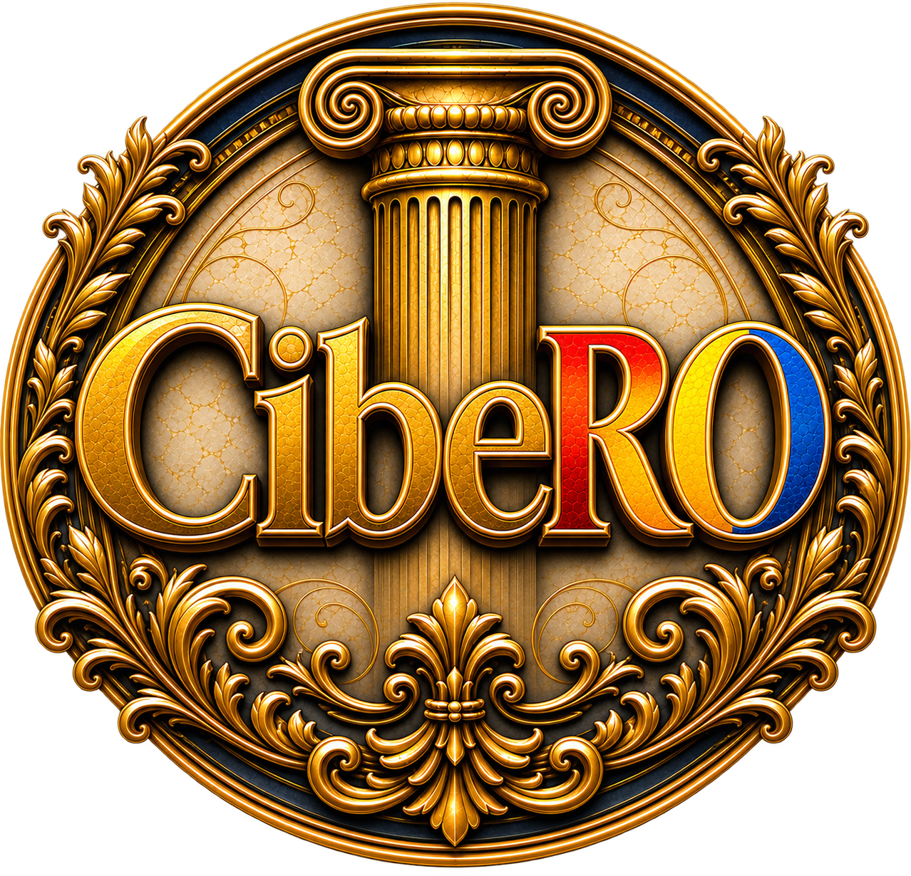

Parcurs clar
Onboarding pas cu pas, fără drumuri ocolite și fără neclarități.

Acoperire națională
Descoperă unde suntem deja activi și unde urmează să ajungem. Selectează orice punct sau caută direct orașul tău.
Flota este activă Flota nu operează momentan
Despre CibeRO
Începerea unei activități noi ar trebui să fie limpede, nu complicată. CibeRO îți oferă un parcurs clar de activare și sprijinul de care ai nevoie pentru a porni cu capul sus.
De la primul pas până la următoarea platformă, păstrăm totul simplu, corect și aproape de tine.
Află cum începi →Beneficii
Onboarding pas cu pas, fără drumuri ocolite și fără neclarități.
Ai un punct de sprijin atunci când ai nevoie de răspunsuri.
După ce prinzi ritmul, noi oportunități se deschid firesc pentru tine.
Parcursul tău
Intră în parcursul dedicat platformei pe care vrei să lucrezi. Vei fi ghidat pas cu pas, de la alegerea situației tale până la trimiterea cererii.
Deschide onboarding-ul →Finalizează pașii de pornire.
Se deblochează după 2 săptămâni de activitate.
Se deblochează după o lună de activitate.
Întrebări frecvente
Da. Onboarding-ul este gândit tocmai ca să te conducă prin pașii de început.
După validare, echipa noastră verifică solicitarea și îți comunică pașii următori pentru activare.
Poți alege platforma potrivită direct din onboarding, iar parcursul se adaptează situației tale.
Folosește harta sau verificatorul de mai sus pentru un răspuns imediat.